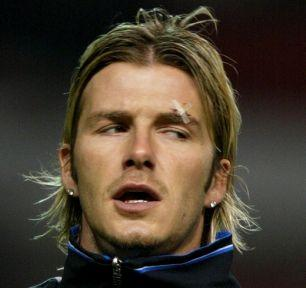
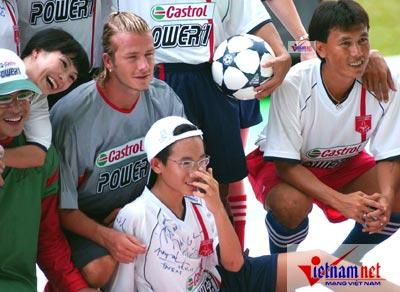

Chương Mười Ba

ầu năm 2003, David Beckham cho xuất bản cuốn tự truyện thứ ba: My Side (ấn bản tại Mỹ mang tên Both Feet on the Ground). Đây là hồi ký thực sự, không chỉ là sách ảnh như hai cuốn trước. Thời điểm này, cuộc đời David gần như hoàn hảo. Về sự nghiệp, anh đã tái ký hợp đồng với Manchester United, và trải qua một World Cup thành công. Về gia đình, anh đón nhận thêm một quý tử. Về tài chính, kinh doanh, mọi việc lại càng xán lạn. Ngoài những hợp đồng quảng cáo cho Police, Vodafone, Castrol, Adidas, Pepsi, Rage Software[1]…, anh còn nhận lời thiết kế quần áo trẻ em cho hãng Marks & Spencer. Trong khoảng 2001 – 2003, các hợp đồng trên đem lại cho anh ước tính 15 triệu bảng. Năm 2001, thương hiệu Beckham được định giá 60 triệu bảng, chỉ hai năm sau đã lên đến 200 triệu. David đăng ký độc quyền các nhãn hiệu Beckham 7, Beckham 23, và DB07 trong những lĩnh vực quần áo, thực phẩm, thức uống, nữ trang, đồ chơi, và…ứng dụng khoa học[2].
Còn nhớ, khi mới quen nhau, Victoria nổi hơn chồng gấp bội, thương hiệu Adams trị giá đến 25 triệu bảng, so với chỉ 7 triệu của Beckham. Nay thì tình hình đảo ngược: trong khi David ngày càng lên cao, Victoria chững lại sau sự tan rã của nhóm Spice Girls, phải bỏ nghề ca sỹ chuyển sang thiết kế thời trang. Thế nhưng, việc ai hơn ai chẳng mấy quan trọng, bởi khi đã lấy nhau thì thương hiệu cũng hợp nhất. Nói đến Beckham tức là nói đến Becks + Posh, chứ không phải riêng David Beckham nữa. (Để củng cố việc hợp nhất thương hiệu này, ít lâu sau khi chuyển sang Real Madrid, David chấm dứt hợp đồng với Tony Stephens, và thuê Simon Fuller, ông bầu cũ của Spice Girls, cùng công ty 19 Entertainment của ông ta, làm nhà quản lý cho cả hai vợ chồng.)
Khi mùa 2002 – 2003 bắt đầu, David không nghĩ gì đến việc rời Old Trafford. Từ lâu, đã râm ran những lời đồn Victoria muốn chồng chuyển tới thủ đô London, hoặc kinh đô thời trang Milan. Những lời đồn này không rõ đúng hay sai. Khi được hỏi về chúng, David hoàn toàn phủ nhận:
-Người ta hay nói Victoria tìm cách lôi kéo tôi khỏi CLB. Không phải vậy đâu. Cô ấy hạnh phúc ở Manchester. Chuyện đi hay ở là do tôi quyết định. Đương nhiên, vấn đề quan trọng thì phải ngồi lại với nhau bàn bạc, nhưng quyết định cuối cùng vẫn phải do tôi.
Như để chứng tỏ mình không muốn ra đi, David mua thêm một căn nhà ở Cheshire, gần Manchester. Không lộng lẫy như “Beckingham Palace”, nhà Cheshire cũng trị giá đến 1.25 triệu bảng, có hồ bơi, phòng tập thể lực, năm phòng ngủ, và sân vườn bao la.
Trong thời gian này, nỗi buồn lớn nhất của David là cha mẹ anh, ông bà Ted và Sandra, ly dị nhau. Anh không biết rằng một vụ “ly dị” khác, lớn hơn nhiều, sắp sửa xảy ra. Từ ngày David quen Victoria, Sir Alex Ferguson đã không hài lòng. Mỗi khi gặp Victoria, Sir không bao giờ nói quá hai tiếng “Xin chào”. Năm tháng trôi qua, sự không hài lòng ấy tích tụ, ngày càng lớn. Đến thời điểm bấy giờ, nó như một ly nước đã đầy, sẽ đổ tràn dù chỉ thêm một giọt nhỏ nhoi.
“Ngày xưa, David chăm chỉ lắm, hết buổi tập rồi vẫn ở lại luyện, luyện nữa, luyện mãi”, Sir Alex nhớ lại, “Sức bền của cậu ta vào hàng nhất đội bóng. Tóm lại, cậu ta có nền tảng rất tốt. Thế rồi…”
Trầm ngâm một lúc, Sir nói tiếp: “Đời David thay đổi từ khi gặp Victoria. Cậu ta bắt đầu chạy theo thời trang, biến đổi thành một con người khác”.
Khoảng tháng 1, 2003, Sir Alex hẹn gặp ông bà Ted và Sandra. Trong buổi gặp, Sir bày tỏ sự lo lắng về việc David dạo này đi đó đi đây quá nhiều, quá thay đổi về lối sống, không chuyên chú tập trung vào bóng đá như trước. Ông cũng than phiền anh không còn nghe lời mình, và nhờ hai ông bà về khuyên nhủ con. Theo lời Sir, ông bà đến nói chuyện với David, song chẳng kết quả gì. David không hài lòng khi thấy thầy làm cái chuyện “mách phụ huynh”, coi mình như trẻ con. Mối quan hệ giữa hai thầy trò ngày càng căng thẳng.
Sang tháng 2, sau trận United thua Arsenal 0 – 2, bị loại khỏi Cúp FA, Sir Alex giận dữ mắng các học trò. Ông chỉ đích danh Beckham:
-David, anh làm cái trò gì trong bàn thua thứ hai hả?
-Không phải lỗi con, lỗi của ai đó ở trung tâm kìa.
-Sai thì phải nhận lỗi chứ.
-Xin lỗi thầy, nhưng con không sai, làm sao nhận được.
-Tôi đã bảo sai thì phải nhận.
Nổi sung, David buột miệng chửi thề. Sir Alex cũng nóng lên, vung chân đá một chiếc giày đang nằm trên mặt đất[3]. Chiếc giày văng trúng vào mặt David, ngay chỗ gần mắt, làm bật cả máu. Theo bản năng, David xông tới thầy, song Ryan Giggs, Gary Neville, và Van Nistelrooy kịp thời ôm anh, ngăn lại. David vùng vằng bỏ vào phòng y tế để được cầm máu, rồi thay đồ ra về. Lúc ra đến cửa, anh thấy Sir Alex đang đứng:
-Thầy xin lỗi, David. Thầy không cố tình đâu.
Không nói gì, David bỏ ra ngoài phòng khách cầu thủ. Victoria đang đợi ở đó, thấy chồng bị thương liền hoảng hốt hỏi thăm. Biết được sự tình, cô nổi giận đùng đùng:
-Ổng không thể đối xử với anh như vậy. Để em vào nói chuyện phải trái với ổng.
May là David đã bình tâm hơn, anh kéo vợ ngăn lại, không muốn việc lại to thêm. Những đã trễ mất rồi, không có gì qua nổi mắt phóng viên. Ngay ngày hôm sau, tin Beckham lãnh phải “chiếc giày bay” đã lan tràn khắp các trang nhất. Cả Sir Alex lẫn Beckham đều ứng xử rất chuyên nghiệp: Sir nhận lỗi, David chấp nhận và tuyên bố xếp mọi chuyện vào quá khứ. Tuy vậy, vết rạn nứt trong quan hệ hai người đã không thể hàn gắn.

Beckham và vết thương phía trên mắt sau vụ “chiếc giày bay” (Ảnh: Dailymail)
Sự tình khi đã xấu thì ngày càng xấu thêm. Tháng 4, David dính chấn thương trong trận thua Real Madrid 1 – 3, tứ kết Cúp C1 trên sân Bernabeu. Trong lúc anh nghỉ dưỡng thương, Solskjaer đảm nhiệm xuất sắc vị trí tiền vệ cánh phải, giúp United hủy diệt Newcastle 6 – 2. Mặc cho Beckham trở lại, Sir Alex tiếp tục tín nhiệm Solskjaer trong hai trận rất quan trọng sau đó: Gặp Arsenal ở ngoại hạng, và tứ kết lượt về C1 với Real.
Phải ngồi dự bị trận gặp Real là cú sốc lớn với David. Nghe Sir Alex thông báo xong, anh lắc đầu bỏ đi, mặc thầy thảng thốt gọi với theo:
-David, trở lại đây. Đừng quay lưng với thầy như vậy!
Trận lượt về United – Real năm đó trở thành kinh điển trong lịch sử Cúp C1. Nửa đầu trận đấu đánh dấu màn trình diễn siêu hạng của Ronaldo, người lập hattrick, đưa “Kền Kền Trắng” dẫn trước 3 – 2, nửa sau thuộc về David Beckham. Vào sân thay người phút 63, David ghi liền hai bàn, giúp đội nhà giành chiến thắng chung cuộc 4 – 3. Bàn thứ nhất là một cú sút phạt thần sầu, khiến thủ thành Casillas chỉ biết đứng ngẩn ngơ, bàn thứ hai từ pha dứt điểm cận thành. Ấy vậy mà Real vẫn thản nhiên như không, bởi theo luật bàn thắng sân khách, United phải thắng đến 6 – 3 mới có thể đi tiếp. Về cuối trận, các cầu thủ đội khách thay vì tập trung đá, lại lo đi “ngoại giao” cùng Beckham. Lần lượt Guti và Zidane “đăng ký” đổi áo với David, còn Roberto Carlos thì cười khì khì: “Thế nào? Năm sau có sang đá cho đội chúng tớ không?”
Real Madrid đã theo đuổi David từ lâu. Sau vụ “chiếc giày bay”, lại càng rộ tin đồn Beckham sẽ về Bernabeu. Về phía David, tuy tỏa sáng lập cú đúp, anh vẫn bất mãn vì không được đá chính. Lần đầu tiên trong đời, anh suy nghĩ đến việc rời Old Trafford. Tuy tình yêu giành cho United là mãi mãi, trong hoàn cảnh hiện tại, David cho rằng việc chuyển đi nơi khác nhiều khi lại tốt hơn cho sự nghiệp của mình. Anh gặp Tony Stephens tâm sự, và giao viên đại diện lo liệu mọi việc.
Trong hai trận cuối tại giải VĐQG, gặp Charlton và Everton, David đều ra sân, ghi mỗi trận một bàn. Bị Arsenal “đè đầu” suốt từ tháng 8, 2002 đến tháng 4, 2003, United vươn lên trong những vòng cuối, lội giòng nước ngược giành ngôi vô địch, ngoạn mục không kém mùa 1995 – 1996. Vậy nhưng Beckham cảm thấy không vui bằng những năm xưa. Sau bàn thắng vào lưới Charlton trên sân Old Trafford, anh nhìn lên khán đài mà nao nao trong dạ. Phải chăng đây là bàn thắng cuối của mình nơi mái nhà thân thương này? Anh tự hỏi, cố cắn răng, ngăn nước mắt tuôn trào.
Ngày 14 tháng 5, United mời David ký hợp đồng mới. Phân vân chưa biết nên đi hay ở, David cứ để đó, không ký. Trong lúc anh cùng tuyển Anh sang Nam Phi đá giao hữu, rồi bay qua Mỹ nghỉ hè, ở nhà, cả United lẫn Tony Stephens đều bận rộn chạy đi chạy lại, đàm phán với các CLB hàng đầu của Tây Ban Nha (TBN) và Italy. Một buổi sáng, đang xả hơi trong khu nghỉ dưỡng giữa sa mạc, David nhận điện thoại từ Stephens, cho biết Quỷ Đỏ đã ra thông báo chính thức về Beckham:
“Manchester United khẳng định các quan chức của CLB đã gặp gỡ với Joan Laporta, ứng cử viên hàng đầu cho chức chủ tịch Barcelona. Theo sau những cuộc gặp này, phía đối tác đưa ra đề nghị chuyển nhượng David Beckham sang Barcelona. Nếu ông Laporta đắc cử chức chủ tịch vào ngày Chủ Nhật, 15 tháng 6 tới đây, và nếu Barcelona đạt được thỏa thuận cá nhân với Beckham, Manchester United sẽ chấp thuận đề nghị chuyển nhượng nói trên.”
Nghe xong, David nổi cơn giận dữ: Vậy là sao? Hai bên đi đến thỏa thuận mà không thèm cho mình biết một chút gì? Mình là nhân vật chính trong câu chuyện, mà chỉ được biết về số phận bản thân qua bản thông cáo báo chí? Lại còn Joan Laporta, hắn là ai mà dám đem mình ra làm mồi nhử người hâm mộ, để được đắc cử chức chủ tịch Barcelona?[4] Ngay tức khắc, anh cho thảo một thông cáo của riêng mình:
“David rất thất vọng khi đọc bản thông cáo của Manchester United. Anh cảm thấy mình bị sử dụng như một quân cờ trong cuộc bầu cử chủ tịch Barcelona. Các cố vấn của David không có kế hoạch gặp gỡ ông Laporta hay những người đại diện cho ông ta.”
Khi Beckham nổi giận với United lẫn Barcelona, tất nhiên, Real Madrid đứng giữa làm ngư ông hưởng lợi. Họ đẩy mạnh đàm phán, sẵn sàng tăng phí chuyển nhượng cho Old Trafford, và tăng mức lương cho David. Ngày 17 tháng 6, ba ngày sau khi Beckham được nữ hoàng Elizabeth II phong tặng danh hiệu Sỹ Quan Đế Chế Anh (OBE), thỏa thuận được hoàn tất: David sẽ chuyển sang Bernabeu với giá 25 triệu bảng, nhận mức lương chót vót 120 000 bảng/tuần. Trước lúc ra đi, David nói lời tạm biệt:
-Tôi muốn gửi lời cảm ơn đến Sir Alex Ferguson. Nhờ thầy, tôi mới trở thành một cầu thủ như ngày nay. Tôi sẽ giữ mãi trong lòng những kỷ niệm quý báu trong thời gian khoác áo Manchester United, sẽ nhớ mãi đồng đội, những người tôi coi là anh em trong gia đình, và các cổ động viên đã luôn ủng hộ tôi suốt những tháng năm qua.
Sir Alex cũng lên tiếng ngợi khen David, chúc anh thành công trên chặng đường mới. Từ ấy về sau, mỗi khi nói về nhau, người này đều giành cho người kia những từ ngữ trân trọng nhất. Quả thật, David phải rời Old Trafford vì mâu thuẫn với thầy, song hai bên không thù hằn chi. Cha mẹ và con cái có khi không hợp tính, buộc phải sống riêng, không cùng dưới một mái nhà. Điều ấy không có nghĩa họ không thương yêu nhau.
Xong việc chuyển nhượng, David sang nghỉ tại Pháp, nơi năm ngoái anh vừa tậu một biệt thự, rồi bắt đầu tour diễn Đông Á, qua các nước Nhật, Thái Lan, Malaysia, Việt Nam để quay quảng cáo, giao lưu cùng fan, và tham dự các sự kiện của nhà tài trợ. Tour này đem lại cho Becks và Posh 6 triệu bảng. Riêng trung tâm thẩm mỹ Tokyo bỏ ra đến 2.2 triệu để vợ chồng Beckham chụp hình quảng cáo cho họ.
Theo sự sắp xếp của nhà tài trợ, dầu nhớt Castrol, David đến phi trường Tân Sơn Nhất, Việt Nam vào tối ngày 24 tháng 6, đem theo một đoàn tùy tùng rầm rộ. Để bảo đảm an toàn, một Beckham giả cùng hai vệ sỹ bước xuống trước, thu hút sự chú ý của báo giới. Beckham thật sau đó xuống sau, được hai hàng vệ sỹ hộ tống ngay vào chuyên xa chống đạn, đưa đến khách sạn Saigon Legend, nơi Castrol đã đặt trước toàn bộ tầng 17.
Sáng hôm sau, David xuất hiện trước 15 000 khán giả tại SVĐ Quân Khu 7. Anh được đưa lên xe mui trần, đi vòng quanh sân, giữa những tiếng hò reo, kêu khóc nức nở của các fan hâm mộ. Hết vòng diễu hành, anh nói bằng tiếng Việt “Xin chào Việt Nam”, bắt tay các quan chức lãnh đạo, trước khi ra sân biểu diễn vài động tác kỹ thuật, trao thưởng cho các đội bóng thắng giải cuộc thi bóng đá mini trước đó, và giao lưu cùng danh thủ và nghệ sỹ Việt Nam (Công Minh, Văn Quyến, Tài Em, Bảo Quốc, Phương Thanh, Mỹ Tâm…). Cuối buổi, David gặp gỡ một số khách hàng trúng thưởng của Castrol, rồi sút bóng lên khán đài, giành tặng những khán giả may mắn. Sau khoảng một tiếng rưỡi trên sân, Beckham họp báo nhanh, kết thúc chuyến thăm chớp nhoáng đất nước hình chữ S, lên đường tiếp tục cuộc hành trình. Nhiều người hâm mộ lưu luyến, theo xe David đến tận phi trường, bất chấp trời mưa tầm tã[5].

Beckham trong buổi giao lưu ở SVĐ Quân Khu 7. Bên cạnh anh là danh thủ Trần Công Minh và ca sỹ Phương Thanh (Ảnh: Vietnamnet)
Chú thích:
[1] Hãng dưỡng tóc Brylcreem ngưng hợp đồng với Beckham sau khi anh lăng xê mốt…đầu trọc!
[2] Beckham còn trở thành cảm hứng cho Bend It Like Beckham, một bộ phim ăn khách, có sự tham gia của nữ diễn viên Keira Knightley.
[3] Nổi giận, đá ném đồ đạc là chuyện thường ở Sir Alex Ferguson. Beckham không phải người đầu tiên bị ông cho “ăn giày”.
[4] Trong quá trình tranh cử, Laporta tuyên bố: Nếu chiến thắng, ông sẽ đem David Beckham về Camp Nou.
[5] Theo thông báo, toàn bộ tiền thu được từ sự kiện sẽ được dùng cho các hoạt động từ thiện.